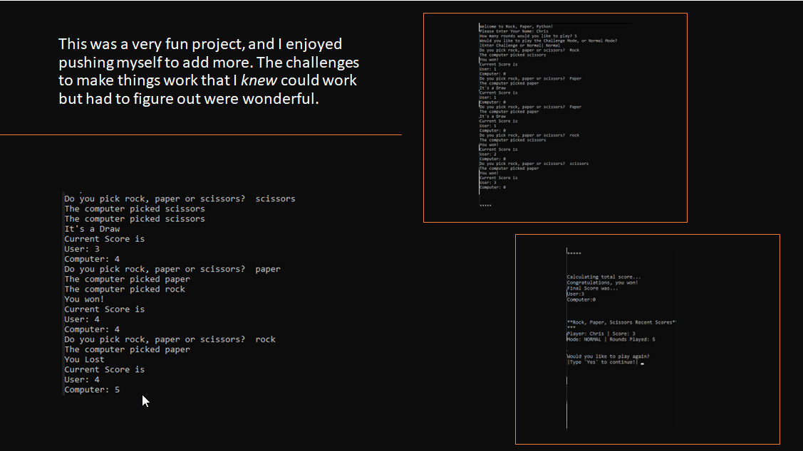

Rock, Paper, Scissors Python Game

This Rock Paper Scissors game is a Python-based project that simulates the classic hand game played between a player and the computer. The program is designed with simplicity and user experience in mind, offering a seamless and intuitive interface. Users are prompted to choose between rock, paper, or scissors, while the computer makes a random selection. The game then compares the choices to determine the winner, providing instant feedback on the outcome. The game logic is implemented using fundamental programming concepts such as conditional statements, loops, and randomization. This makes it an excellent example of how Python can be used to create interactive applications with straightforward, yet effective, code. The program also includes input validation to ensure that the user’s selections are appropriate, enhancing the overall user experience by preventing invalid inputs. This project is a testament to my ability to write clean, maintainable Python code while adhering to best practices. It showcases my understanding of basic game development concepts and user interaction, as well as my capability to create engaging applications with Python. Whether for entertainment or educational purposes, this Rock Paper Scissors game demonstrates a solid foundation in Python programming.